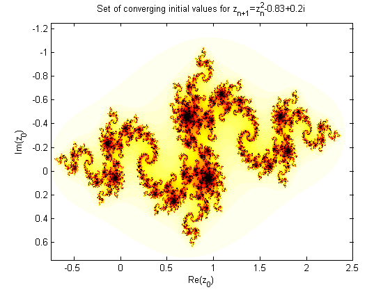
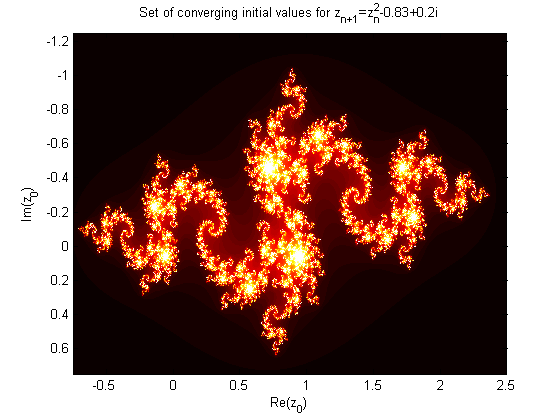

JuliaSetDrawQ4 -- Creating a Set
Contents
Initializing
n = 100; %the number of iterations c = -0.83 + 0.2*1i; %Initializing the given constant c = -0.78 + 0.15*1i <= makes the coolst one grid = 5000; %the number of points between the limits (size of grid) xlims = [-0.75 , 2.5]; %The limits of he x axis ylims = [-1.25,0.75]; %The limits of the y axis x = linspace(xlims(1),xlims(2),grid); %The x values y = linspace(ylims(1),ylims(2),grid); %The y values [xMesh,yMesh] = meshgrid(x,y); %Creating a mesh for x and y for 2D plotting z = xMesh + yMesh*1i + c; %Initializing all the initial values and setting the x axis to real and y to complex convCount = ones(grid,grid); %Initializing a matrix to count how many times the solution converges
Creating the Matrix of Values
for i = 0:n z = z.^2 + c; %Z(n+1) conv = abs(z) < 2; %Creating a matrix of where the valus will converge convCount = convCount + conv; %Increase each adress of convCount by one for each convering value end figure(1) %Initialixe Figue 1 imagesc(x,y,convCount); %Creates an graphic with scaled colours based on convCount colormap(flipud(hot())); %Changing the colour scheme for aesthetics title('Set of converging initial values for z_{n+1}=z^{2}_{n}-0.83+0.2i'); xlabel('Re(z_{0})'); ylabel('Im(z_{0})'); figure(2) imagesc(x,y,convCount); colormap(hot()); title('Set of converging initial values for z_{n+1}=z^{2}_{n}-0.83+0.2i'); xlabel('Re(z_{0})'); ylabel('Im(z_{0})'); %{ figure(3) imagesc(x,y,convCount); colormap(jet()); title('Set of converging initial values for z_{n+1}=z^{2}_{n}-0.83+0.2i'); xlabel('Re(z_{0})'); ylabel('Im(z_{0})'); figure(4) imagesc(x,y,convCount); colormap(cool()); title('Set of converging initial values for z_{n+1}=z^{2}_{n}-0.83+0.2i'); xlabel('Re(z_{0})'); ylabel('Im(z_{0})'); %} 